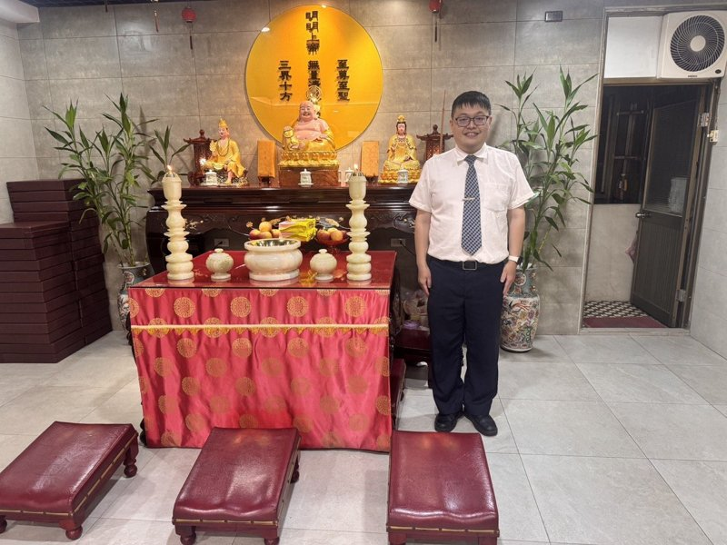

五十年，我們都在這裡
—— 張鎮寰
感謝天恩師德，白水聖帝、不休息菩薩聖靈護佑，讓後學可以從101年求道一路成長，直到現在的講師進修班。在這八年的班程，後學學習了很多，其中讓後學改變最多的是脾氣！大學期間個性衝動，時常不經意得罪他人而沒有自覺，直到發現身邊的朋友愈來愈少。在人際關係低落時，因緣際會下認識後學的引保師，並帶後學到光慧求道及開立德班，自此開始後學的修道歷程，衝動的脾氣也開始一點一點慢慢地修掉。
進入新民班時，對道都還不是很了解，就跟著講師前賢參加各種活動及班程。第二年進入至善班，課程到一半之後，因為大學畢業之後回到新竹，自此也遠離了道場。
在107年看見公司的同事在臉書發布成立家壇的訊息，後學主動聯絡了那位同事，此時就像濟公老師在默默地帶後學重回道場。去到佛堂後，眼前所看到的一切是多麼的熟悉，巧的是一條金線回到了發一崇德！
108年回到至善班，跟大學期間上研究班的感覺是完全不同。以往是接受講師及前賢關心及服務，加入十組運作大事紀組，此時也開始學習主動及負責任的態度。在道場學習如何參辦，從初一十五、辦道、法會十組及各種班程及活動。
110年行德班剛開始時，對肉食仍然有慾望。然而在快要畢班時，看到崇德班班員立清口，此時與同儕班員心中開始許下願望，要崇德班畢班要立清口！在老師及各位點傳師、講師、前賢的幫忙下，開始學習吃素，此時也開始有不殺生的念頭。最後在111年崇德班畢班時，在蓄德佛院立了清口及壇主愿。
在113年立了講師愿，更加體認到使命承擔、代師傳道的重要性。在各位點傳師、講師的苦心成全下，開始踏向講師的道路！
回首這十四年以來，從懵懵懂懂到現在成為講師，這是一件多麼奇妙的事！這一路以來一點一滴的學習，不斷的成長。在未來仍然要不斷的學習，活到老學到老，要學習不休息菩薩永不休息的精神！
最後要感謝這一路陪伴著後學的老師及各位點傳師、講師、前賢，如果沒有當時的你們，就沒有現在的後學！謝謝，感恩。
（依張鎮寰講師心得整理，民國115年6月）